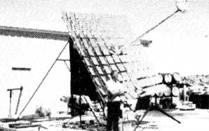
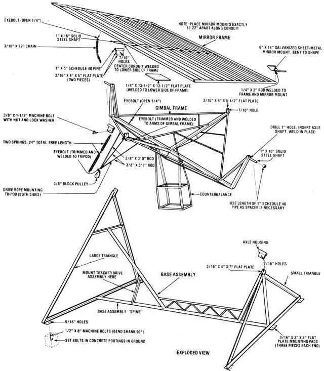
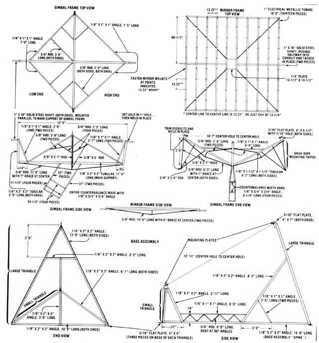
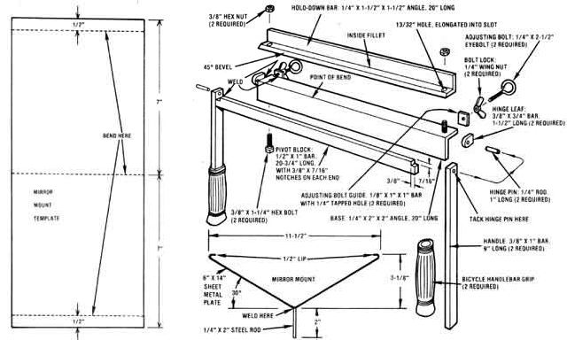
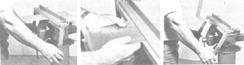
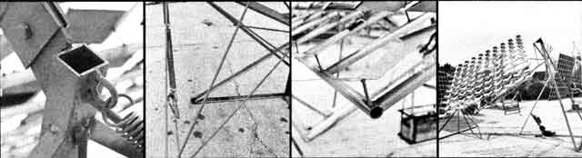
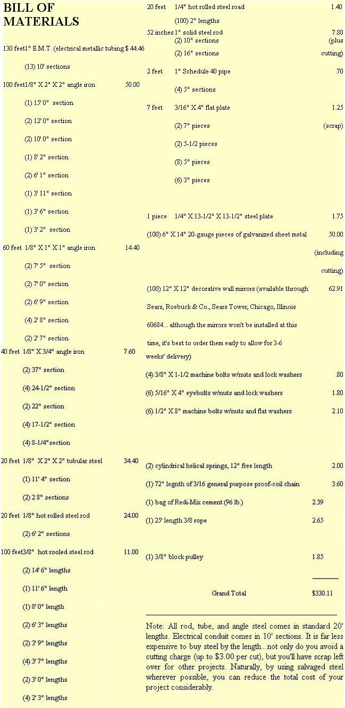

If you've been following the past few issues of this magazine, you're probably familiar with the name Charles Curnutt (yep, the fellow with the solar furnace), who was featured in MOTHER NO. 52. Mr. Curnutt-a designer and manufacturer by trade-had come up with a singular apparatus to catch the sun's rays and put them to work . . . and his design was unique, not only because it afforded an almost unlimited number of possibilities (from heating water to driving a steam engine), but also because it required an investment of only a few hundred dollars. Best of all, Curnutt's unit was compact enough (10' X 15' X 16') to qualify as a "backyard" solar generator!
These factors alone made Charlie's rig worth looking into ... but he really "put the icing on the cake" by allowing MOTHER'S researchers to take his design, improve upon it, and make it available to anyone who cared to use it!
Well, we've been working up our own version to share with you, and in Issue No. 55 (pages 93-95) we showed you how to construct a sun-tracking system. Now, here's the second part of this long-awaited backyard solar project: setting up the furnace's frame.
Essentially, there are three main parts to this assembly: [1] the base, [2] the gimbal frame, which pivots right and left (to track the sun across the sky during the day) and also supports [3] the mirror frame (this structure holds the 10 rows of mirrors in position and is additionally adjustable on a horizontal axis to compensate for the changes in the sun's height during all four seasons).
All three sections of the furnace frame use either rod, tubular, or angle steel, which are all available from any steel supply house. In addition, the mirror frame is made with common electrical metallic tubing (E.M.T.) ... which can be purchased at your local electrical contractor's supply store. (Of course, if you already happen to have a large assortment of steel on hand, or if you don't mind bartering with your friendly neighborhood scrap dealer, you can save a tremendous amount of money on this project by using salvaged metal.)
Before you begin this project, you'll need to get hold of some basic workshop tools: a power drill with an assortment of bits, a hacksaw, a 25-foot measuring tape, several C-clamps, a hammer, a square, a vise, and a pair of pliers or vise-grips. You'll also need a welder (either gas or electric)-since this isn't a "bolt together" project-and a posthole digger if you plan on mounting your solar furnace on an unpaved site.
Once you have all the tools and materials at hand, you're ready to assemble the base of the furnace .. . preferably on a smooth, level surface. Begin by constructing the two "triangles" shown-at either end of the base-in the accompanying drawings, and drilling a 7/16" hole through the plate at the top of each of these forms.
Then, weld the smaller triangle perpendicular to the 15' length of angle iron that serves as the base's ''backbone", and attach its brace as shown in the diagrams.
Next, get a friend to help you position the large triangle at the opposite end of the 15' spine, and carefully measure a span of 12 feet 11 inches between the center holes in the mounting plates at the top of each triangle. With that distance measured, take your 8' 2" angle-iron brace and weld it in place between the upper horizontal support on the large triangle and the base's backbone (the point where this brace meets the spine will vary from one frame to another... but-as long as the space between the two center holes is 12 feet 11 inches-you can let the brace fall where it may).
Finally, wind up this stage of construction by welding the 6'9" piece of angle iron between the two triangles' supports, fastening the 3/8" structural support rod in place as illustrated (here's where the vise comes in handy . . . for bending the necessary 90° angles in the rod), and attaching the six mounting pads to the bases of the triangles. You can also take this opportunity to weld the 2'8" lengths of angle iron-which will eventually serve as a mount for the tracker drive mechanism-in place.
With the base now completed, you'll want to get busy on the gimbal frame, which is constructed of tubular steel strengthened with angle iron and steel rod. There are two critical measurements on this component: the 12-foot span between the inner ends of the two solid axles, and the 10 feet 7 inches from center hole to center hole in the two mounting plates on the "arms" of the frame. When these two distances are correct, the frame will pivot with no difficulty.
You can put together the counterbalance (the angle-iron "box" fastened beneath the gimbal frame) separately and attach it to the frame later . . . since this unit won't be needed until the furnace's steam generator (boiler) is mounted on a boom affixed to the mirror frame. (We'll cover that assembly in our next issue.)
It will also be easier to delay welding on the drive rope mounting tripods till after the gimbal and mirror frames are attached to the base assembly… and-when that's done- the eyebolts and block pulley can be fastened in their proper locations.
The mirror frame, however, (which is nothing more than thirteen 10' lengths of 1" electrical metallic tubing ... reinforced with steel rod and welded together in a 10'-square grid) can be assembled at this time. The frame will pivot on two solid steel axles and not only support the 100 mirrors that reflect the sun's rays, but also provide a mount for the steam generator and boom that will be added later.
Each mirror will be mounted on a 6" X 14" section of sheet metal that has been bent to shape on a brake (the process is described in the accompanying sidebar) and attached to the mirror frame with 2" lengths of welded-in-place 1/4" steel rod. This setup will allow the mirrors to be adjusted separately ... in order to direct the maximum amount of sunlight at the steam generator "target".
Begin the mirror frame assembly by laying out four sections of electrical metallic tubing (E.M.T.) in a square . . . to form the perimeter of the frame. Weld these four pieces in place (with the ends butted to the sides) and then use a 12"-wide scrap of lumber as a "ruler" ... to help measure the placement of each parallel length of pipe before you weld it to the two end sections of the frame.
Now, weld the 1/4" X 13-1/2"-square piece of flat plate to the center of the frame (between the two middle sections of parallel conduit). Fasten the center length of tubing to the frame as illustrated (note that both the flat plate and the center section of conduit are welded to the lower side of the frame ... with the plate fastened first, and the E.M.T. placed across the frame so that its open ends are exposed). And. finally, attach the 3/8" structural support rod to the mirror frame in an "X" pattern.
Then, drive one of your 1" X 16" solid steel shafts about halfway into each end of this exposed conduit (forming an axle that the frame can pivot on), and "lock" them in place by tacking the shafts to the end of the conduit. Fasten an eye-bolt to the frame where indicated, and you're ready to attach the mirror holders.
After you've bent the sheet-metal mounts to shape (following the instructions in the sidebar), weld a 2" upright length of 1/4" steel rod directly to the center of the underside of each one. Then, fasten the completed mounts to the mirror frame so that the 2" support rods, like the parallel pipes, are 13.22" apart. (This interval provides the proper clearance between the mirrors when you're ready to adjust them. The figure is precise, but you'll come close enough by measuring just shy of 13-1/4" on your rule.)
If you plan on constructing MOTHER'S solar furnace, you'll need a sheet-metal bending brake to fabricate the mirror mounts. And-unless you have access to a metal shop-this piece of equipment could set you back quite a few bucks.
That's precisely why we've come up with a handy little make-it-yourself bending brake that'll pay for itself in no time. This device will handle sections of sheet metal up to 18" wide and .050" thick (18 gauge) and shouldn't take more than an hour or two to whip together.
Start off by founding up the materials detailed in the accompanying illustration (all the metal components are available from your local steel supply house or scrap-iron vendor), then assemble the following tools: a hacksaw, a file, two C-clamps, a ruler, a pair of vise-grips, a power drill with various bits, and a thread-tapping set. You'll also need the use of a welder (which-if you're building the solar furnace-you'll already have on hand) and a grinding wheel.
Cut all the metal pieces to size (don't drill any holes yet, though), then take the two hinge leaf sections and round one end of each to make a 3/8" radius. Drill a 5/64" hole on the point of this radius, and weld the hinge leaves to the ends of the base (the centers of the bores in the leaves should line up exactly with the outside corners of the angle-iron base).
Next, cut the notches indicated in the pivot block, and clamp it to the front of the base... so that the top surfaces of the two components are flush. Then, drill a 5/64" hole on center and 1/2" from the end of both handle pieces, temporarily fasten these 3/8" X 1" X 9" bars to the hinge leaves by running a small finishing nail through the two pairs of holes, and-finally-weld the pivot block to the two handles ... taking care not to include the base in your weld. With that done, remove the two finishing-nail hinge pins, enlarge the holes in your "double-thick" hinges to 1/4", loosen the clamps, and set the entire handle assembly aside till later.
Now bore a 13/32" hole in each end of the hold-down bar (1 inch from the extreme edges and 1/2 inch from the angle's inside fillet), followed by another hole ... or the same size but 5/8" in front of the first. Continue drilling to remove the "meat" between each pair of holes until a rough slot is formed, then take a small file and shave the edges of the slot till the opening forms a smooth, elongated oval.
Following this, grind a 45-degree bevel on the hold-down bar's forward edge, then carefully level the grind with a flat file. Next, clamp the hold-down bar to the base (with the bar's beveled edge 1/16" from the "point of bend") and mark a spot (3/16" from the "inside fillet" edge of the slot) on the upper surface of each end of the base. Remove the clamps, then drill a 7/16" hole at each of the two points. Now slip 3/8" bolts into these holes from the angle's underside, and weld the heads in place.
Once the bolts are firmly attached, drill a 13/64" hole in both adjusting bolt guides, thread the bores with a 1/4" tap, and weld the pieces to the base-directly behind the 3/8" bolts-as illustrated. You can also take this opportunity to permanently fasten the handle assembly to the base by fitting the 1/4" X 1" hinge pins into the holes and tacking the protruding "stubs" to the handles.
With all the components completed, give your brake a coat of rustproof paint, and-when it dries-thread the wing nuts onto the eyebolts, screw the eyebolts into the adjusting bolt guides, slip the hold-down bar over the 3/8" bolts (keeping it in place with the two hex nuts), and install the handle grips. Then, just clamp the lower lip of the brake's base in a vise... and you're ready to bend some metal!
FORMING THE MIRROR MOUNTS
Start by scribing three 6" lines across each of the 6" X 14" sheet-metal mirror mount "blanks": Make one score 1/2 inch from each end and the third directly across the center. Now, place one of the sheets between the hold-down bar and the base (be sure to insert the mount from the rear or the brake) so that the first 1/2" lip protrudes beyond the point of bend, snug down the two hex nuts (loosely enough to allow the sheet to slide when you push it), and lift up on the handles till the lip is pressed against the 45° bevel. Then, just pull the sheet forward so the center scribe is at the point of bend, form the metal to the desired angle, and go on to shape the final lip. When you've finished bending all 100 mirror mounts, attach the 1/4" X 2" rod supports first to the sheet metal and then to the mirror frame, as detailed in the main article.
It doesn't take much to get the feel of this gadget, and after a while you'll realize just how versatile the homemade brake actually is. Of course, it can't handle really heavy sheet metal (over .050" thick), but chances are you'll never need to bend stock like that. When you do have occasion to form 22- to 18-gauge steel, remember that the hold-down bar can be adjusted so it rests more than 1/16" from the point of bend (by loosening the eyebolts evenly and sliding the bar back)... this will allow sheets of up to 18 gauge to conform-with no problems-since the radius of the bend won't be as "tight".
With the three major components completed, you can prepare for the assembly of your project. Start by orienting your furnace's base with the North Star (a necessary procedure). To do this, position the base in the location you've chosen for your solar furnace. (Naturally, if you're living in the Northern Hemisphere, you must be certain that the area you've chosen has a southern exposure and is not blocked by trees, buildings, or any other opaque objects.) Then, in the evening, locate the North Star and simply "line up" the lower and upper mounting plates on the
ends of the two triangles with that particular heavenly body (this is easily accomplished by kneeling down in front of the smaller triangle and moving the base until you can "sight" the star... using the two plates as a guide).
Next, mark the position of the base's six mounting pads, remove the base, and dig six 1'-deep holes at the indicated points. Pour concrete into the holes and set the base's mounting bolts (bent near their heads to form "anchors") into the mix, leaving about two inches of thread protruding from the footing. When the concrete hardens, line the "feet" up with the bolts, drill six 9/16" holes in the pads, drop the base over the bolts, and fasten the structure securely to its footings.
Now that your furnace is oriented correctly, the three components can be assembled. To begin, make axle housings out of the four 5" sections of 1" Schedule 40 pipe by welding the edges of two 4" X 5" pieces of 3/16" flat plate-positioned parallel and about 1/4" apart-along each pipe. Now, slip one of these housings over each axle stub on the gimbal frame, and get a couple of people to help you lift the frame into position atop the base.
Next, line the axle housings up evenly over the mounting plates on the base (the mounting plate fits between the two flat plate sections on each axle housing). Then, with two people holding the axle housings in place, check the movement of the gimbal frame ... if it's overly sloppy from end to end, you can either slide the axle housings closer together to take up the play, or (if necessary) cut a short length of pipe to serve as a spacer between the lower axle housing and the end of the gimbal frame.
When the mounting plates sit nicely between the housings, fasten them in place by drilling 7/16" holes through the flat plates on the housings (these must be directly in line with the holes already in the mounting plates) and then installing 3/8" bolts.
With this done, lift the mirror frame up onto the gimbal, install axle housings on its shafts and fasten that frame to the gimbal in the same way that you attached the gimbal frame to the base. You should then weld the drive rope mounting tripods in place on the gimbal frame, and attach the eyebolts to the gimbal where indicated. Additionally, you can take this opportunity to mount the tracker drive assembly to its support bracket, and fasten the chain temporarily between the mirror frame and the gimbal frame.
At this point, your solar furnace framework is complete. The procedures that haven't yet been covered (inserting the mirrors, hooking up the rope drive system, attaching and adjusting the sunrise/sunset switches, and fastening the phototransistor switch housing) can be best performed when the steam generator and its plumbing are installed (the final steps will be detailed in MOTHER NO. 57). Until then, you can enjoy the satisfaction of being well on your way to having an independent energy-generating "station" in your own backyard!
|
 Click here for a downloadable image of the Mirror Frame. Click here for a downloadable image of the Base Assembly. |
 Click here for a downloadable image of the gimble frame, mirror frame, and base assenbly. |
 Click here for a downloadable image of the miror mounts |
|
 LEFT TO RIGHT: Grip the gadget's base in the jaws of a vise, and slip a sheet metal ""blank"" into the brake as shown. Make your first two bends, then line up your scribe mark with the hold-down bar's beveled edge for the third. Now just snug down the hex nuts and lift up the handles...your final bend is complete! |
 LEFT TO RIGHT: Axle-housing and eyebolt detail...drive rope mounting tripod...mirror frame and mounts...furnace completed thus far |
 Prices from 1979. |
|
 |
|
|